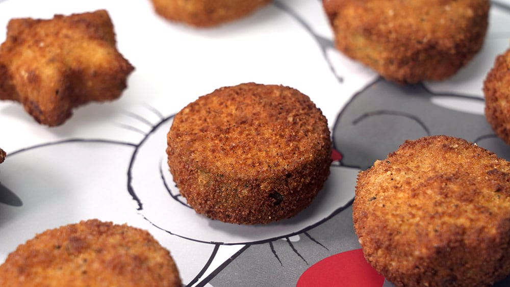

Nuggets de Calabazin

INGREDIENTES:
- 500 gramos de calabaza
- 1/3 taza de agua
- taza de pan rallado
- 1/3 taza de harina de trigo
- 1/2 cucharadita de orégano
- 1/2 cucharadita de perejil
- 1/2 cucharadita de albahaca
- 1 chorro de aceite de oliva
- 1 pizca de pimienta
- 1/2 cucharadita de sal
PREPARACION:
1. Cuece la calabaza cortada en trozos en agua durante 10-12 minutos hasta que quede blanda.
2. Tritúrala en la batidora o machácala con un tenedor hasta hacerla puré.
3. En un bol mezcla el puré de calabaza con la harina, un chorro de aceite, la sal, la pimienta, el orégano, la albahaca y el perejil.
4. Coge pequeñas porciones de masa de calabaza con las manos mojadas, forma unas bolitas y aplástalas dándoles la forma de nuggets.
5. Pasa cada nugget de calabaza por el pan rallado.
6. Calienta una sartén con aceite y fríe los nuggets de calabaza hasta que se doren u hornéalos durante media hora a 180 grados.